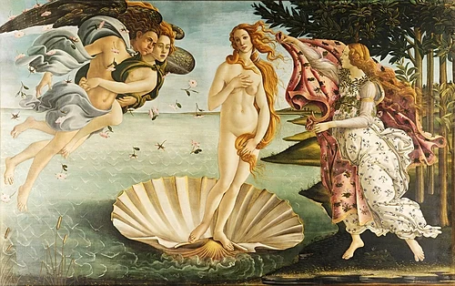

Masterpieces of the Renaissance
Mona Lisa

- Artist: Leonardo da Vinci
- Year: Circa 1503-1506
- Medium: Oil on poplar panel
- Location: Louvre Museum, Paris, France
The Last Supper

- Artist: Leonardo da Vinci
- Year: 1495-1498
- Medium: Tempera and oil on plaster
- Location: Santa Maria delle Grazie, Milan, Italy
The School of Athens

- Artist: Raphael
- Year: 1509-1511
- Medium: Fresco
- Location: Vatican Museums, Vatican City
The Birth of Venus

- Artist: Sandro Botticelli
- Year: Circa 1484-1486
- Medium: Tempera on canvas
- Location: Uffizi Gallery, Florence, Italy